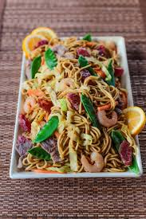

|  | PancitPancit with rice noodles, meat, shrimp, and vegetables is sure to be a family favorite. Perfect for everyday meals and special occasions! |
Ingredients1 onion, chopped 15 cloves garlic, minced 1/4 cup calamansi juice 1/4 cup fish sauce (patis) 1 teaspoon salt 1 teaspoon ground black pepper 1/2 teaspoon brown sugar 1 whole chicken, cleaned and patted dry 1 tablespoon vegetable oil 6 lemon grass stalks, or more to taste 3 bay leaves |
|
| <<< Back to Main Dish | |